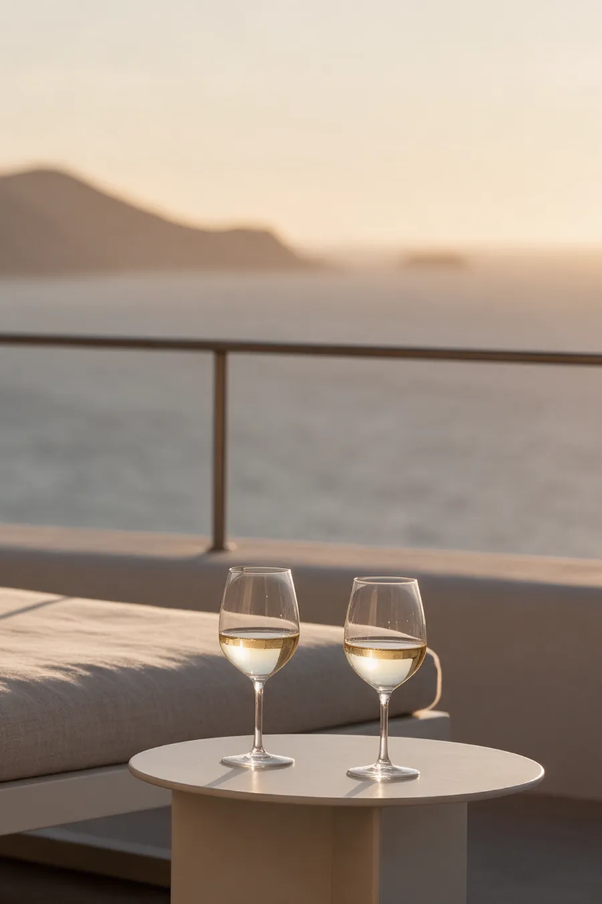
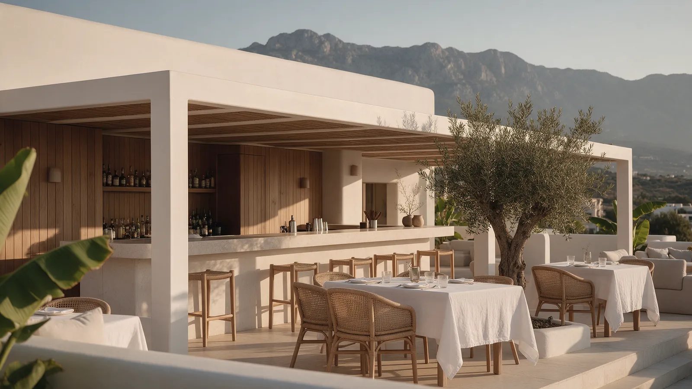
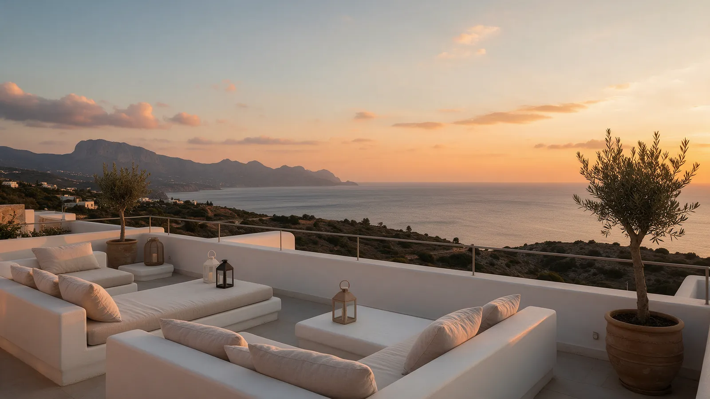

ÜmbayResort Hotel.
Un duplex hôtelierMéditerranéen.


Douze bungalows, douze chambres d’hôtel
ÜMBAY Resort Hotel est un duplex hôtelier méditerranéen à Karşıyaka, Girne : douze bungalows et douze chambres d’hôtel, réunis autour d’une piscine, d’un restaurant-bar et d’un rooftop.
On réserve en direct auprès de l’hôtel : en ligne, par téléphone ou par e-mail.
- 12bungalows
- 12chambres d’hôtel
- 1piscine
- 1rooftop

le lieu
Une piscine, un restaurant-bar et un rooftop, au cœur de l’hôtel.

Deux façons de séjourner à ÜMBAY : douze chambres d’hôtel et douze bungalows.
séjourner
Chambres &Bungalows


sur place
autour dela piscine



table

Le restaurant-bar
restaurant, bar et bar à cocktails


Le rooftop
sur le toit de l’hôtel
Réserveren direct auprès de l’hôtel
Réservez votre chambre ou votre bungalow en ligne, ou appelez-nous.
réserverVenir à l’hôtelKarşıyaka, Girne
Nous joindretéléphone et e-mail